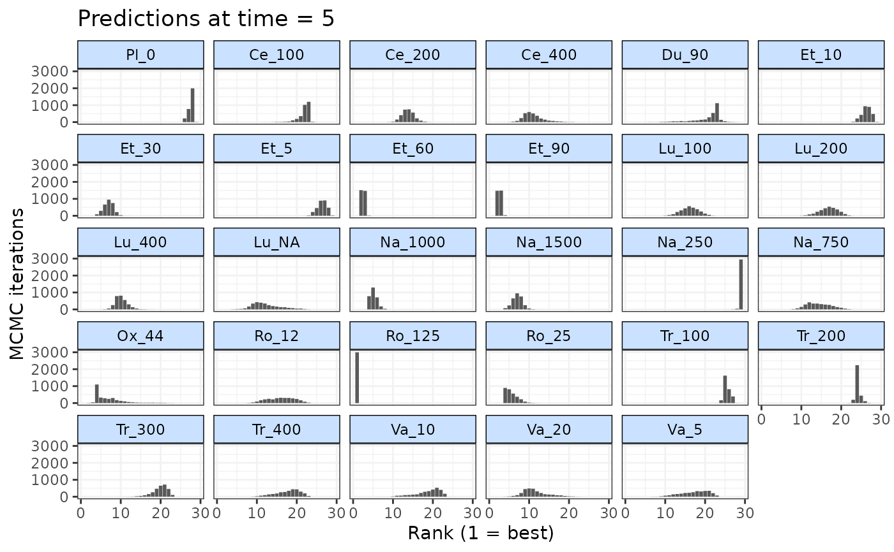

Rank predictions at a specific time point
rank.mb.predict.RdRank predictions at a specific time point
Arguments
- x
an object of
class("mb.predict")that contains predictions from an MBNMA model- time
a number indicating the time point at which predictions should be ranked. It must be one of the time points for which predictions in
xare available.- lower_better
Indicates whether negative responses are better (
lower_better=TRUE) or positive responses are better (lower_better=FALSE)- treats
A character vector of treatment/class names for which responses have been predicted in
xAs default, rankings will be calculated for all treatments/classes inx.- ...
Arguments to be passed to methods
Examples
# \donttest{
# Create an mb.network object from a dataset
network <- mb.network(osteopain)
#> Reference treatment is `Pl_0`
#> Studies reporting change from baseline automatically identified from the data
# Run an MBNMA model with an Emax time-course
emax <- mb.run(network,
fun=temax(pool.emax="rel", method.emax="common",
pool.et50="abs", method.et50="common"))
#> 'et50' parameters must take positive values.
#> Default half-normal prior restricts posterior to positive values.
#> Change from version 0.2.2 onwards: corparam=FALSE as default
#> Compiling model graph
#> Resolving undeclared variables
#> Allocating nodes
#> Graph information:
#> Observed stochastic nodes: 417
#> Unobserved stochastic nodes: 89
#> Total graph size: 7703
#>
#> Initializing model
#>
# Predict responses using a stochastic baseline (E0) and a distribution for the
#network reference treatment
preds <- predict(emax, E0=7,
ref.resp=list(emax=~rnorm(n, -0.5, 0.05)))
#> Priors required for: mu.1
#> Success: Elements in prior match consistency time-course treatment effect parameters
# Rank predictions at latest predicted time-point
rank(preds, lower_better=TRUE)
#>
#> ========================================
#> Treatment rankings
#> ========================================
#>
#> Predictions at time = 24 ranking
#>
#> |Treatment | Mean| Median| 2.5%| 97.5%|
#> |:---------|-----:|------:|-----:|-----:|
#> |Pl_0 | 27.62| 28| 26.00| 28|
#> |Ce_100 | 21.85| 22| 17.98| 23|
#> |Ce_200 | 13.74| 14| 11.00| 17|
#> |Ce_400 | 10.89| 10| 7.00| 18|
#> |Du_90 | 20.87| 22| 11.00| 24|
#> |Et_10 | 26.33| 26| 24.00| 28|
#> |Et_30 | 6.89| 7| 4.00| 9|
#> |Et_5 | 26.29| 26| 24.00| 28|
#> |Et_60 | 2.51| 3| 2.00| 3|
#> |Et_90 | 2.51| 3| 2.00| 3|
#> |Lu_100 | 16.14| 16| 12.00| 20|
#> |Lu_200 | 16.84| 17| 12.00| 21|
#> |Lu_400 | 10.11| 10| 7.00| 14|
#> |Lu_NA | 12.44| 12| 7.00| 21|
#> |Na_1000 | 5.09| 5| 4.00| 7|
#> |Na_1500 | 7.08| 7| 5.00| 10|
#> |Na_250 | 28.98| 29| 29.00| 29|
#> |Na_750 | 14.43| 14| 10.00| 21|
#> |Ox_44 | 6.93| 6| 4.00| 18|
#> |Ro_12 | 15.99| 16| 10.00| 22|
#> |Ro_125 | 1.00| 1| 1.00| 1|
#> |Ro_25 | 5.54| 5| 4.00| 9|
#> |Tr_100 | 25.50| 25| 24.00| 27|
#> |Tr_200 | 24.17| 24| 23.00| 26|
#> |Tr_300 | 19.82| 20| 15.00| 23|
#> |Tr_400 | 17.67| 18| 11.00| 22|
#> |Va_10 | 18.76| 19| 11.00| 23|
#> |Va_20 | 11.53| 11| 7.00| 19|
#> |Va_5 | 17.45| 18| 10.00| 23|
#>
#>
#### Rank predictions at 5 weeks follow-up ####
# First ensure responses are predicted at 5 weeks
preds <- predict(emax, E0=7,
ref.resp=list(emax=~rnorm(n, -0.5, 0.05)),
times=c(0,5,10))
#> Priors required for: mu.1
#> Success: Elements in prior match consistency time-course treatment effect parameters
# Rank predictions at 5 weeks follow-up
ranks <- rank(preds, lower_better=TRUE, time=5)
# Plot ranks
plot(ranks)

# }